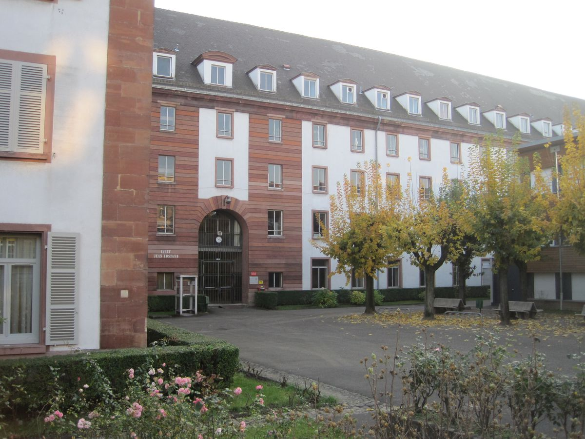
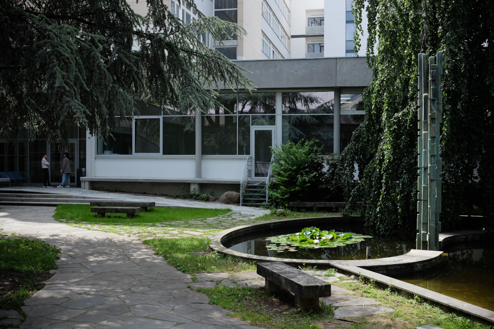

L'école INSA de Strasbourg

Le lycée Jean Rostand de Strasbourg

L'UFR math-info de Strasbourg
Missions d'enseignements à l'INSA de Strasbourg
2023, 2024 - Mathématiques pour l'architecte et l'ingénierie, Séries de Fourier, équation des ondes et de la chaleur
(polycopié du cours et d'exercices).
2024 - Outils mathématiques pour l'ingénieur·e
(polycopié d'exercices).
2024 - Travaux Pratiques Maple
Des travaux pratiques pour Maple en complément du cours "outils mathématiques pour l'ingénieur·e".
TP1 Partie 1 - Etude de fonctions
TP1 Partie 2 - Développements limités
TP1 Partie 3 - Equations différentielles
TP2 Partie 1 - Fonctions de plusieurs variables
TP2 Partie 1 - Optimisation
TP3 - Champs de vecteurs
Khôlles BCPST 1
Quelques sujets d'exerices de khôlles :
Logique et raisonnement
Nombres complexes
Calcul matriciel, systèmes linéaires
Géométrie
Espaces vectoriels, applications linéaires
Suites
Trigonométrie
Calcul intégral
Equations différentielles
Probabilités et dénombrement
Missions d'enseignements à l'UFR math-info de Strasbourg
2022, 2023 - Cours intégrés d'algèbre linéaire S2 pour la double licence Math-Eco
(polycopié du cours).
2021 - TD de Mathématiques pour les Sciences de la Vie S2.
2020 - Cours intégrés de Mathématiques pour les Sciences S1 (option physique).
Développement d'agrégations
Quelques développements d'agrégations rédigés avec l'aide de Antoine Feltz et Quentin Ehret. (à venir)